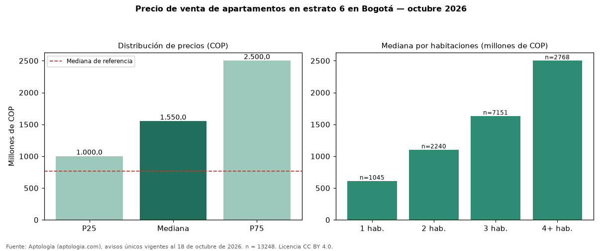

Precio de venta de apartamentos en estrato 6 en Bogotá — octubre 2026
Con 13248 avisos únicos, el precio mediano de apartamentos en estrato 6 en venta en Bogotá es COP 1,55 mil millones. Frente a apartamentos en Bogotá (COP 765 millones), la diferencia es de 103 % por encima. Por metro cuadrado, la mediana es COP 8.750.000/m² (+18 % frente a COP 7.403.846/m²). El rango intercuartílico va de COP 1,00 mil millones a COP 2,50 mil millones (razón 2,5). Cruzando con la oferta de arriendo equivalente, la rentabilidad bruta implícita es 8,5 % anual. Por habitaciones: 1 habitación, COP 610 millones (n = 1045); 2 habitaciones, COP 1,10 mil millones (n = 2240); 3 habitaciones, COP 1,63 mil millones (n = 7151); 4 o más habitaciones, COP 2,50 mil millones (n = 2768). El área mediana es 189 m² (referencia: 102 m²). Datos abiertos CC BY 4.0 de Aptología; fuente y búsqueda de inmuebles: https://www.aptologia.com/venta/bogota. Archivos: PDF de 2 páginas, CSV con las cifras y gráfica PNG.

| Avisos únicos | 13248 |
|---|---|
| Percentil 25 | COP 1.000.000.000 |
| Mediana | COP 1.550.000.000 |
| Percentil 75 | COP 2.500.000.000 |
| Mediana por m² | COP 8.750.000 |
Fuente: avisos vigentes de portales inmobiliarios recopilados por Aptología, deduplicados (mínimo 30 avisos únicos por celda). Precios pedidos, no cerrados. Fecha: 2026-10-18.